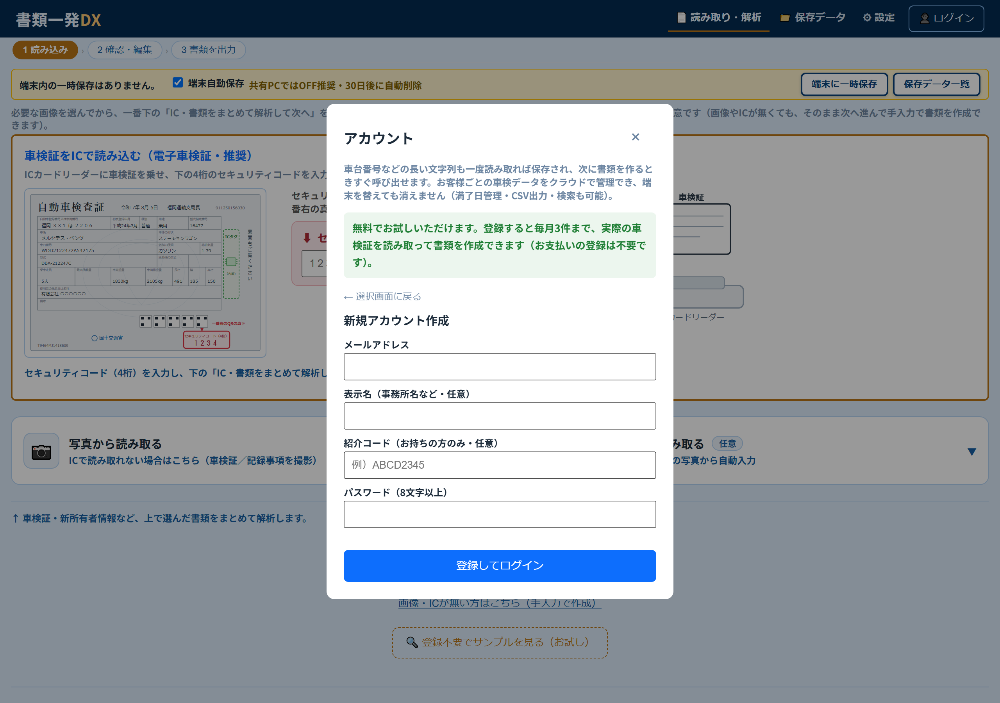
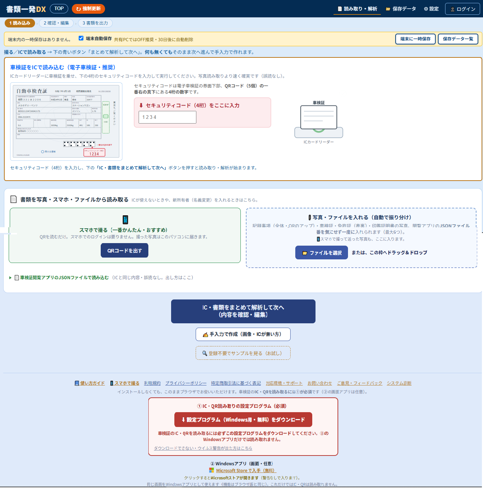
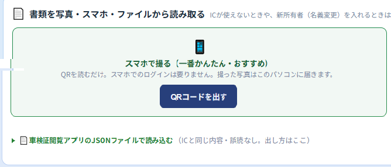
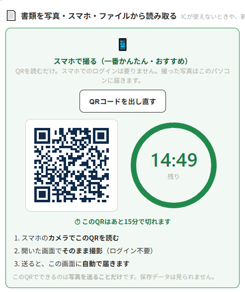
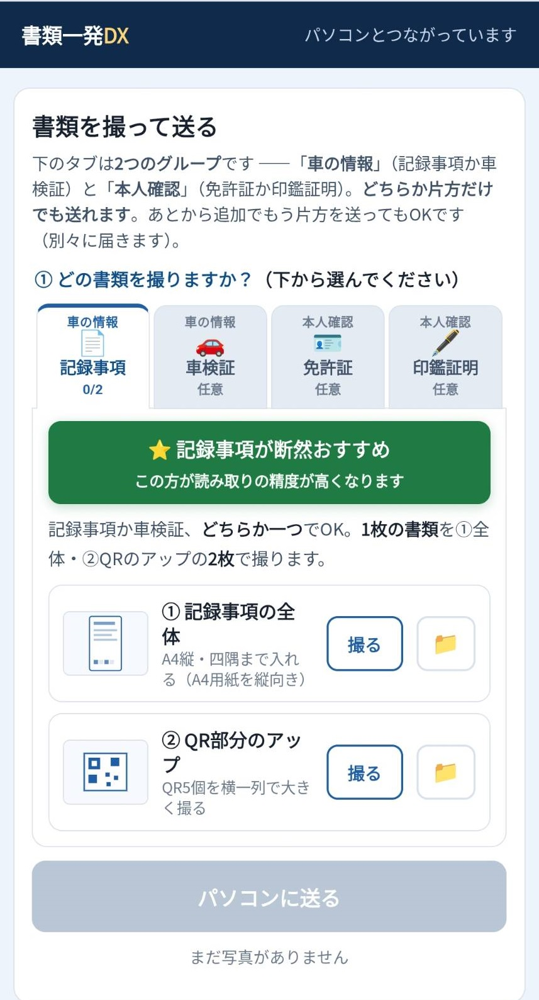

書類一発DX 使い方ガイド
書類一発DXを
書類一発DXを
かんたんに使いこなすために
実際の画面を見ながら、書類の読み込みから出力まで、 操作方法を順番にご案内します。
HOW TO USE
書類一発DXの使い方
実際の操作画面を見ながら、順番に進めていきましょう。
もくじ
1
アカウントを作る（登録・ログイン）
まず、書類一発DXを開きます。
初めての方は 「新規登録（はじめての方）」、 すでにアカウントをお持ちの方は 「ログイン」を選びます。
新規登録では、以下を入力します。
- メールアドレス
- 表示名（事務所名など・任意）
- パスワード（8文字以上）

登録すると確認メールが届きます。 メール内のリンクをクリックすると、読み取り機能が使えるようになります。
つまずいたら
-
確認メールが届かない
迷惑メールフォルダをご確認ください。 携帯メールをご利用の場合は、 no-reply@shorui-dx.com を受信できるよう設定してください。 -
パスワードが短いと登録できません
8文字以上で設定してください。 -
ログインできない
メールアドレスとパスワードの入力間違いがないか確認してください。
進め方はいつも同じ3ステップ
1 読み込み › 2 確認・編集 › 3 書類を出力
ログインできると、こんな画面が開きます。

必要書類を読み取る方法（スマホで撮る）
2
QRコードを出す

「QRコードを出す」ボタンを押します。
3
QRコードを使ってスマホ、パソコン、書類一発DXを連携
QRを読むだけ。 撮った写真は連携しているパソコンに届きます。

連携が成功するとスマホの画面が切り替わります。

読み取った車両情報や顧客情報を確認し、 必要に応じて内容を編集します。
4
作成する書類を選択する
必要な書類を選択し、まとめて作成します。
5
書類を出力する
作成した書類をPDFやZIP形式で保存できます。
6
保存・管理する
保存した車両・顧客情報をあとから検索・管理できます。